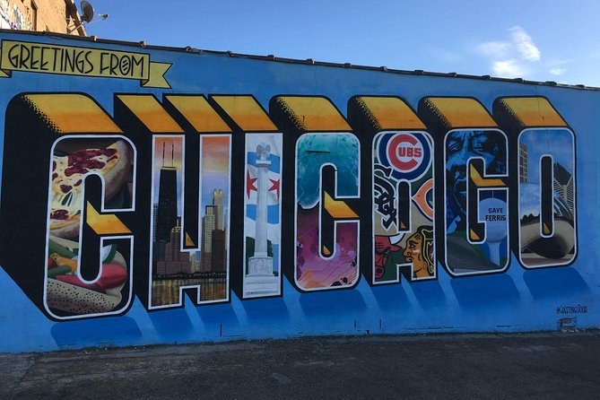
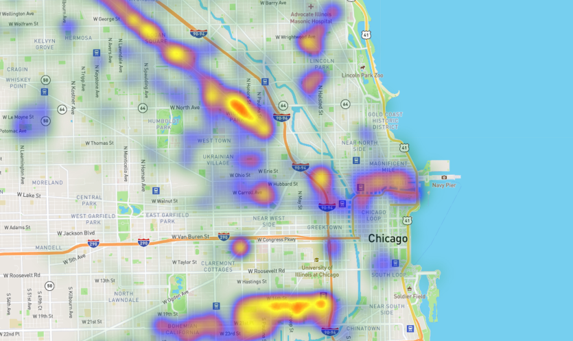
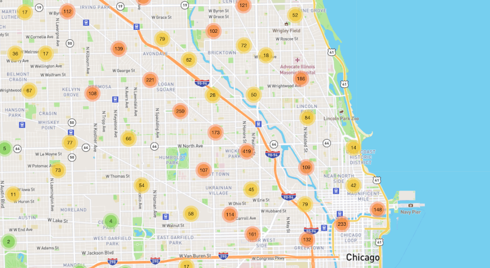
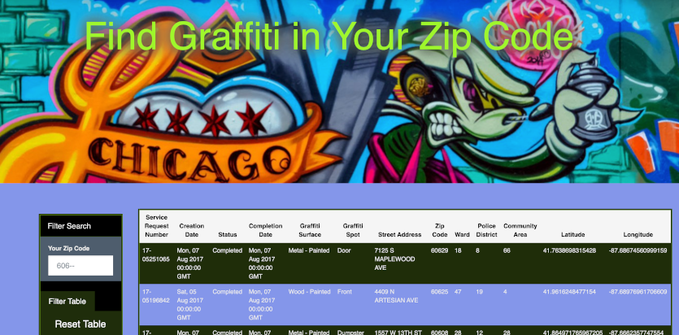

Thank you for coming to my page

Each day the City of Chicago receives graffiti removal requests. These requests are input and tracked through their 311 reporting system. This project explores the data from the 311 Service Requests and will observe trends as well as tell a story through data visualization.
Interactive Heatmap showing distribution of graffiti reports 
Interactive Clustermap distribution of graffit reports 
Interactive Dashboard allowing you to search graffiti removal requests in any zip code in Chicago 
I am an aspiring Data Analyst with a focus on Database Mangement, Business Intelligence and Strategy.
I started becoming more involved with Data Science after starting my own business in Denver, Colorado. I love taking deep dives into data and figuring out how and why things work, finding hidden links and associations between different sets of data and ultimately creating solutions to complex problems.
In my spare time you might find me under the hood of a car, picking up heavy things and putting them down repeatedly or on StackOverflow.
Create a dynamic table based upon UFO sighting dataset that will enable users to search and filter the table data for specific values.
Building interactive dashboard to explore Belly Button Biodiversity, which catalogs the microbes that colonize the human navel. A dynamic dashboard that updates all charts and graphs when a new sample is selected. Gif Version
Creating a visualization dashboard website plotting weather data with Python and OpenWeatherAPI of over 500 cities showing how weather changes depending on latitude, including a responsive data table.